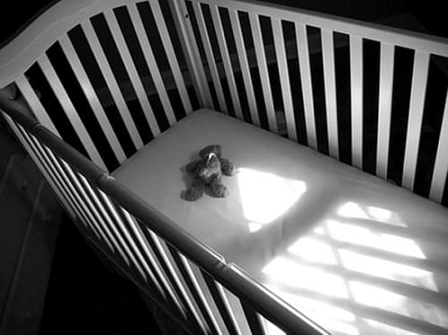

Внезапная необъяснимая смерть ребенка во сне всегда была подсознательным страхом каждого родителя. Но хотя мы все еще не знаем точно, что служит причиной этой трагедии, родители больше не должны чувствовать себя беспомощными. Благодаря новым исследованиям, существуют некоторые шаги, которые они могут предпринять, чтобы уменьшить свое беспокойство и снизить риск смерти своего ребенка. Исследования доказали, что следующие три практических шага могут снизить риск синдрома внезапной детской смерти:
1. Не позволяйте курить рядом с ребенком как до, так и после родов. Один из самых значительных факторов риска синдрома внезапной детской смерти, на который матери могут оказать влияние, — курение, когда дети находятся в утробе или в той же самой комнате. Влияние табачного дыма более чем в два раза увеличивает риск синдрома внезапной детской смерти. Представьте, что вы собирались внести ребенка в комнату, и вдруг заметили табличку: «Осторожно! В этой комнате содержится 4000 химикатов, некоторые из которых приводят к раку и повреждают легкие и особенно много вреда причиняют дыхательным путям вашего младенца». Конечно же, вы не внесете туда своего ребенка. Но именно это и происходит, когда мама приносит младенца в комнату, которую часто посещают курильщики. Курение также мешает естественному материнству. У курящих матерей более низкий уровень гормона пролактина, который не только регулирует выработку молока, но и увеличивает осознание матерью здоровья ее ребенка.
2. Укладывайте ребенка спать на спину, а не на живот. Кампания «Снова спать», проводившаяся в прошлом десятилетии, уменьшила количество случаев синдрома внезапной детской смерти примерно на 50%, с 1 ребенка из 1000 в 1995 году до 1 ребенка из 2000 в 2005-м. Исследования показывают, что пробуждение — встроенный защитный механизм ребенка — лучше срабатывает, когда ребенок спит на спине, а не на животе. Кроме того, когда ребенок спит лицом вниз, он может сильно вжать голову в матрас, из-за чего вокруг него формируется воздушный карман, что приводит к повторному вдыханию воздуха, который он только что выдохнул и в котором мало кислорода. Дыхательная система ребенка лучше работает, когда ребенок спит на спине.
3. Кормите ребенка грудью. В 2007 году Федеральное агентство по надзору за качеством и исследованиями в системе здравоохранения опубликовало обзор более чем 9000 медицинских исследований по грудному вскармливанию и здоровью младенцев. Среди выводов был и такой: у детей, вскармливаемых грудью, вероятность развития синдрома внезапной детской смерти ниже на 36%.
ЧТО ДЕЛАТЬ
По вышеперечисленным причинам постарайтесь, чтобы ваш ребенок спал на спине. Однако, хотя сон на спине действительно снижает вероятность развития синдрома внезапной детской смерти примерно на 50%, эта статистическая корреляция совсем не подразумевает, что ваш ребенок больше рискует, если он будет спать на животе. Некоторые исследователи синдрома внезапной детской смерти полагают, что дети обычно принимают во сне то положение, которое позволяет им наиболее комфортно дышать и спать на протяжении ночи. Возможно, поэтому младенцы иногда крутятся и ворочаются ночью. У некоторых детей при сне на спине происходит заброс кислого желудочного содержимого в пищевод, что приводит к пробуждению среди ночи от боли. Если ваш ребенок не хочет спать на спине, обследуйте его в больнице на возможную ГЭРБ.
Теоретически грудное вскармливание может снизить риск синдрома внезапной детской смерти, потому что грудное молоко содержит вещества, необходимые для формирования мозга, или «факторы роста», которые способствуют ускорению развития нервных центров, особенно дыхательного. Грудное молоко более благоприятно для крошечных дыхательных путей, потому что оно не содержит аллергенов. Дети, вскармливаемые грудью, лучше просыпаются. Кроме того, вскармливание грудью улучшает координацию дыхание/глотание. |
А что насчет использования клиновидных кроватей, фиксирующих ребенка во сне в положении на спине? Американская академия педиатрии и Организация, изучающая вопросы синдрома внезапной детской смерти, настоятельно не рекомендуют использование клиновидных кроватей и фиксаторов, которые навязывают ребенку сон на спине. Их безопасность или эффективность в уменьшении количества случаев синдрома внезапной детской смерти так и не была доказана.
Здоровье ребенка от докторов Сирс / Сирс У. и др.